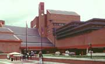
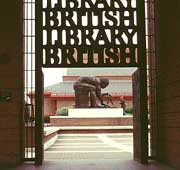
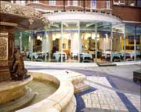
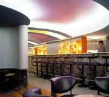

ISMIR 2005
6th International Conference
on Music Information Retrieval
London, UK 11 - 15 September 2005

Social Programme
Contents: Concert | Reception | Banquet
12 Sept: Concert
The ISMIR 2005 concert, a mixture of jazz and rap, will be on Monday 12 Sept 2005 from 20:00, given by the outstanding young jazz saxophonist Soweto Kinch.
| Date & Time | Monday 12/09/2005, 20:00 |
| Artist | Soweto Kinch's Quintet |
| Venue | The Spitz 109 Commercial St. Old Spitalfields Market London, E1 6BG |
Artist Profile: Soweto Kinch
Saxophonist
Composer
Music Arranger
Lyricist
- BBC Radio Jazz Awards: Best Instrumentalist & Best Band 2004
- An Album Of The Year 2003: Mercury Music Prize
- Best Jazz Act 2003: MOBO Awards
- BBC Radio Jazz Awards: Rising Star 2002
- White Foundation International Sax Competition Montreux Jazz Festival: International Young Saxophonist 2002
"Fresh sound, aggressive virtuosity and raw, bluesy energy mark him out as an outstanding player" Jazzwise Magazine
"Simply explosive. Promoters, media and audiences are suggesting him as a major new star" Jazz Review Magazine
"This 25-year-old is one of the freshest and most exciting prospects to emerge through British music for years" HIT sheet
"Soaring, risk-taking playing" The Times
"Kinch is a spectacular musician" Observer
13 Sept: Reception
The ISMIR 2005 reception on Tuesday 13 September is hosted by the Music Department of the British Library at St Pancras, London.
The British Library holds the national reference collections of music manuscripts and printed music. The collection of manuscript music amounts to some 12,000 volumes, containing over 100,000 single items. Some of these were acquired with the foundation collections of the British Museum in 1753, and these have been supplemented since by many gifts and bequests, and by numerous purchases.
The Library holds around 1.5 million separate items of printed music. Since the late eighteenth century, music published in Great Britain has been deposited under the terms of successive copyright acts. Music received via legal deposit encompasses classical, popular and educational publications. This archive of British publications is complemented by modern scholarly editions purchased from abroad, and by the continued acquisition of antiquarian music.
The Sound Archive holds over a million discs, 185,000 tapes, and many other sound and video recordings. The collections come from all over the world and cover the entire range of recorded sound from music, drama and literature, to oral history and wildlife sounds. They range from cylinders made in the late 19th century to the latest CD, DVD and minidisc recordings. We keep copies of commercial recordings issued in the United Kingdom, together with selected commercial recordings from overseas, radio broadcasts and many privately-made recordings.
More information about the major music collections held by the British Library and the Sound Archive can be found at the following links:
- British Library Music Collections [new window]
- British Library Sound Archive [new window]
Outline Timetable
ISMIR 2005 delegates will be welcomed to the Library by the Head of Music Collections, Chris Banks, and by the National Sound Archive's Curator of Western Art Music, Tim Day. They and their colleagues will be available to discuss the collections, the technical resources of the Library, and some of the exciting music-related projects which are taking place there.
| 6:30-6:40 | Welcome |
| 6:40-6:50 | Introduction to BL Music Collections Chris Banks, Head of Music Collections |
| 6:50-7:05 | Introduction to BL Sound Archive Tim Day, Curator, Western Art Music |
| 7:05-8:00 | Galleries open |
| 9:00 | Building Closes |
14 Sept: Banquet
The conference banquet on Wednesday 14 September will be held at
Bank Westminster, 45 Buckingham Gate, London SW1E 6BS
Bank Westminster can be found hidden away in St James's Court, between Buckingham Palace and Westminster Cathedral. Set in a very traditional setting, Bank Westminster by contrast is a modern restaurant serving classic European dishes with a creative twist.
The conservatory dining room overlooks a beautiful original Victorian courtyard, and with the high ceilings it creates a bright and spacious feel.
The über cool Zander Bar is located within Bank Westminster and will be open until 1am on the night of the dinner.
|
|
|
Concert Artist:
Soweto Kinch
Reception venue:
British Library


BL Photos: Mary Ann Sullivan
Banquet Venue:
Bank Westminster

